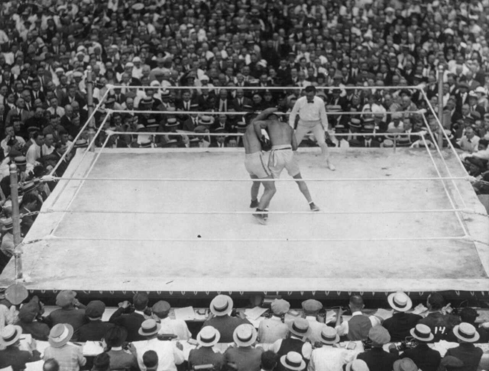

Directions: Study the photograph and the background note, then answer the questions.

Background. Dempsey, the American heavyweight champion, defended his title against Carpentier, a French war hero, on July 2, 1921. About eighty thousand people attended. The gate passed one million dollars, a first for a sporting event. A radio account of the fight was broadcast to listeners beyond the arena, and newspaper extras carried the result the same day. Dempsey won by a knockout in the fourth round.
1. What details in the photograph show that this event was staged for an audience far larger than the crowd in the seats?
2. A listener in Ohio could not see the fight. What could that listener still share with a fan in the arena that evening, and what made the sharing possible?
3. Six years later, Babe Ruth hit his sixtieth home run of the season on September 30, 1927. Why did a record like that one hold a national audience better than a single game could?
4. Name the payer behind free network radio and the popular press, and explain in one or two sentences how that payer shaped which people became national celebrities.
1. What details in the photograph show that the event was staged for an audience far larger than the crowd in the seats? The press rows in the foreground are filled with reporters working at the ringside, the product of the event as much as the fight itself. The arena was built for about eighty thousand spectators for one afternoon, a scale that depended on national advance publicity. Students should cite the press seats and the scale of the crowd and connect both to newspapers, radio, and newsreels beyond the arena. [Blueprint 3]
2. What could a listener in Ohio share with a fan in the arena that evening, and what made it possible? The listener heard a radio account of the same rounds at the same time and read the same result and analysis in newspaper extras and the next morning's papers. Radio broadcasting and the wire services made the event simultaneous and national rather than local and delayed. The listener shared the event, the result, and the next day's conversation, lacking only the sight of the ring. [Blueprint 3]
3. Why did Ruth's record hold a national audience better than a single game? A single game ends in an afternoon. A record pursuit runs all season, and each game changes the number the newspapers, radio accounts, and newsreels report the next day. Ruth's sixtieth home run on September 30, 1927, was the end of a serial the whole country had followed for months, and the Yankees' World Series sweep that followed extended it. [Blueprint 3]
4. Name the payer behind free network radio and the popular press, and explain how that payer shaped celebrity. Advertisers and sponsors paid for network programs and bought newspaper advertising space. Because the audience was the product sold to them, the media favored figures and stories that gathered the largest audience the advertisers wanted to reach. Heroes and stars who drew that audience, such as Ruth and Lindbergh, received daily coverage, while people and communities outside the advertisers' target audience were covered rarely or as sensation. [Blueprint 3]
Teacher note. This check is formative. Question 1 is the observation diagnostic. Students who describe only a boxing match have not yet read the press rows as evidence. Question 4 predicts success on the writing task, because both require the student to connect the shared culture to the advertising that paid for it.